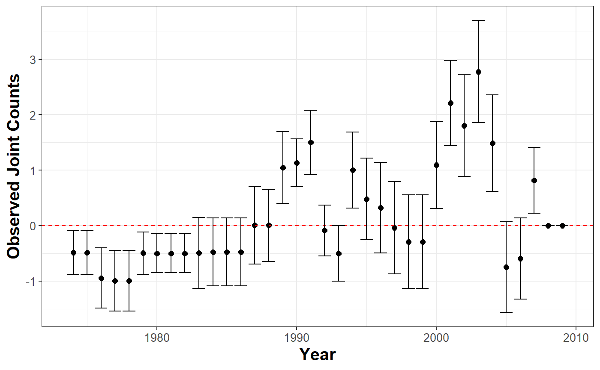

Uses Joint Count tests to assess spatial clustering or dispersion of categorical variables in the data. Negative values indicate positive spatial clustering.
plot_JointCount( data, var_cured = character(), var_id = character(), var_time = character(), n = 1, t = 1.645 )
| data | data. |
|---|---|
| var_cured | binary indicator of immunity. |
| var_id | ID's unique identifier. |
| var_time | variable that measures time. |
| n | number of observation per id. |
| t | value of the confidence interval. |
A ggplot object
library(BayesSPsurv) dataw <- spduration::add_duration(data = BayesSPsurv::Walter_2015_JCR, y = "renewed_war", unitID = "ccode", tID = "year", freq = "year", ongoing = FALSE)#> Warning: Converting to 'Date' class with yyyy-06-30plot_JointCount(data = dataw, var_cured = "cured", var_id = "ccode", var_time = "year", n = 12)